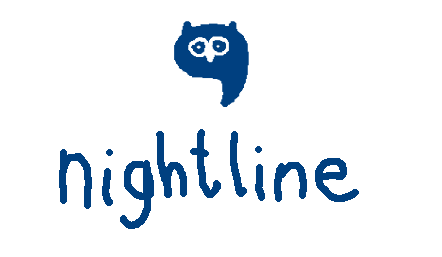
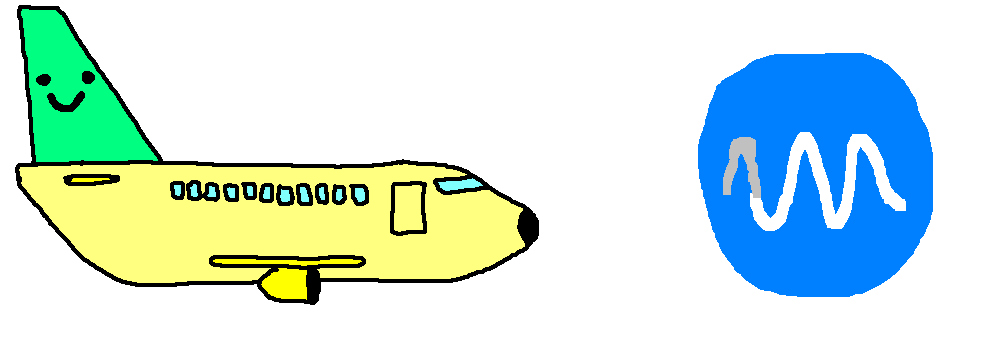

I'm Carlos, a 22 year old recently-graduated-student. I was born in Barcelona, but moved to Mallorca at a young age.

People close to me were commercial pilots, so since I was little I've always enjoyed aviation. At around 15 or so I also started enjoying the computer-science-ey side of planes; avionics.

Around that time I moved to the UK for college: one of the best decisions I've ever taken. Not only did I improve my english and got to soak up a new culture, but I went through an incredible journey of self-discovery and made some great friends along the way.

In college I got into Linux, ThinkPads (and how cool toying with computers is) and Python, which I used on my Computer Science Project; making a 2D Air traffic Control game (it was a bit of a trash project, but a really cool experience).

My favourite college-time project however, was more hardware based. It definitely sent me on a path of appreciation for more low-level electronic/systems projects and consolidated my admiration in that field. I did mine on the construction of an 8bit CPU, based on the book Digital Computer Electronics by A. Malvino.

Once I finished college I got into Loughborough University, studying Computer Science and Business Management (BSc). I graduated with a 2:1 last summer.

During my time there I was part of two societies, one of them being a Nightline, student to student listening service. This really opened my eyes to the importance of mental health and introduced me to a wonderful world of acceptance, respect and listening (both to yourself and to others).
The other society was LUMotorsport, a university team competing internationally against other universities to build and race a single seat race car. My university's final year project was based around the creation of a series of low-cost data-centered projects for the team's journey from a combustion car to an electric one.

Currently, I am back in Spain - now in Madrid. Doing my EASA ATPL(A) (Airline Transport Pilot License) and hope to have it finished by early 2023!

That's about it for now. When I do more cool stuff I'll make sure to write it here!
Psst, psst - here is my CV just in case. You can reach me at me@carloslagoa.com